00The idea
This page teaches how an izzardry game looks, moves, speaks and behaves, so the next game feels like a sibling of the last.
An izzardry game is a monochrome, monospaced, paper-quiet surface with the board in the middle. Everything else floats, appears only when needed, and gets out of the way.
Everything here was extracted from Zudoku, the first izzardry game, and proven by Zhess, the second, which was built on this guide from its first commit. Both are reference implementations: when this guide is silent, do what they do. Where either departs from the guide, the guide wins (see the Zudoku audit and the Zhess audit).
Seed-based Sudoku. The source of the guide: the stage, the blurred start, the radial dial, the long-press ladder, the page tint, undo toasts.
Chess against the computer, two players on one device, or a serverless room for two. It tested the guide on a two-tone board, in dark mode and across devices.
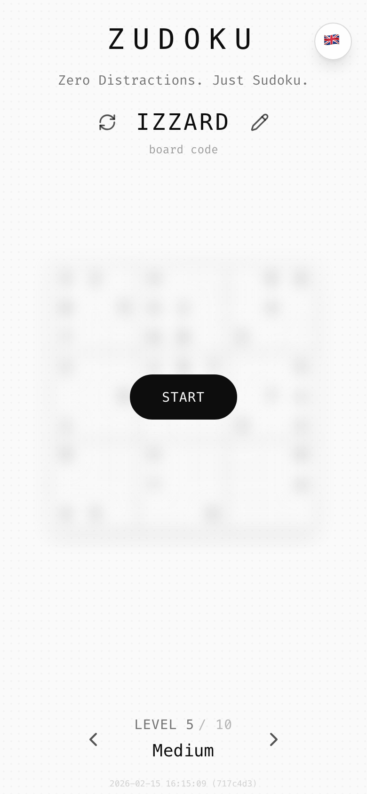
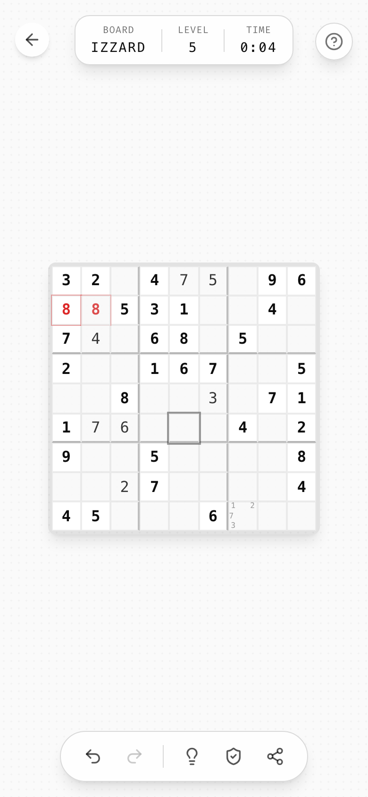
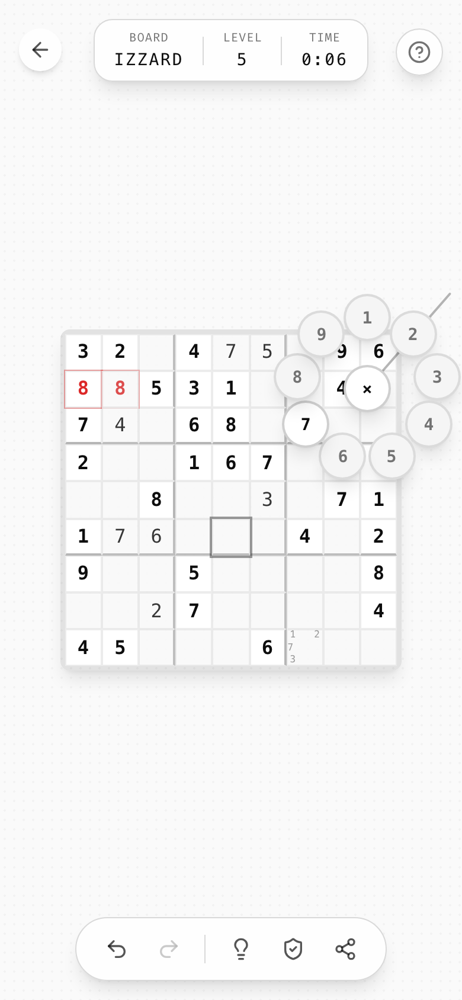
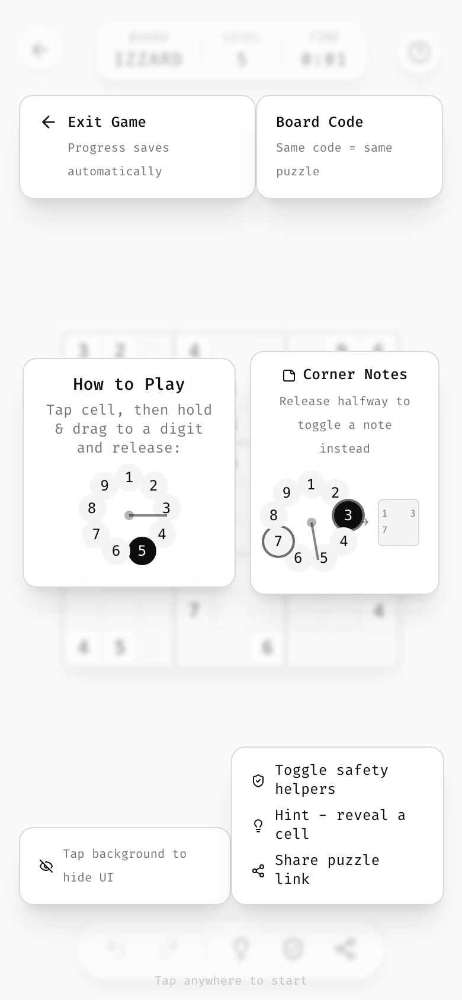
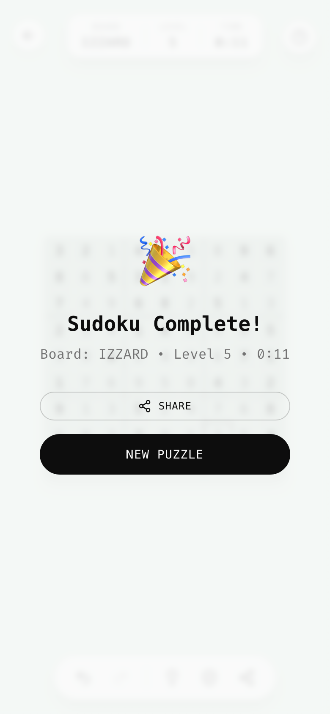
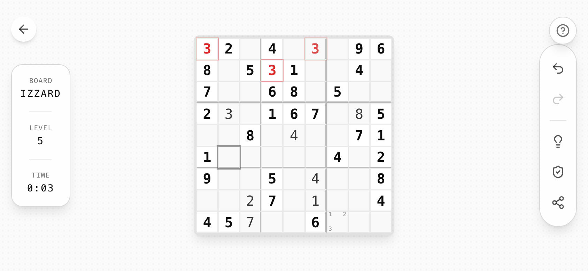
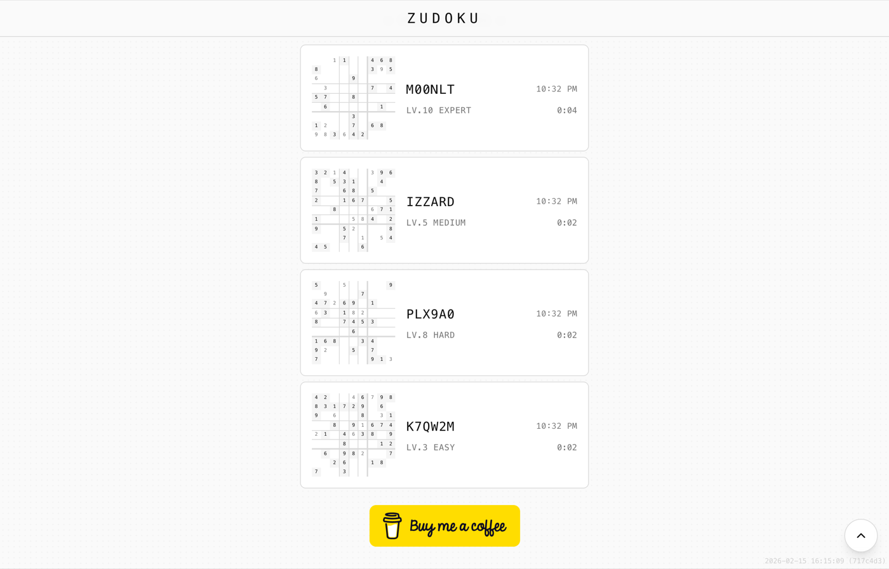
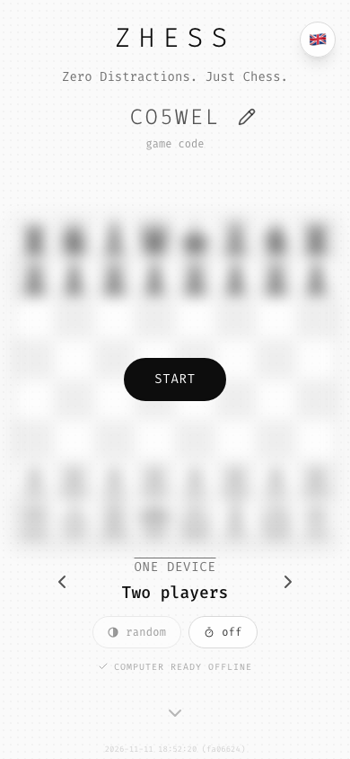
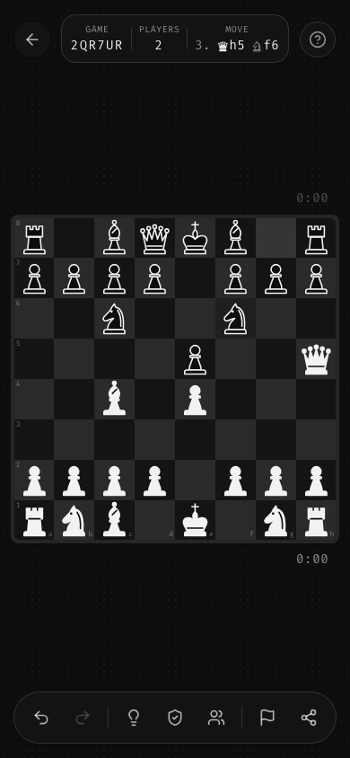
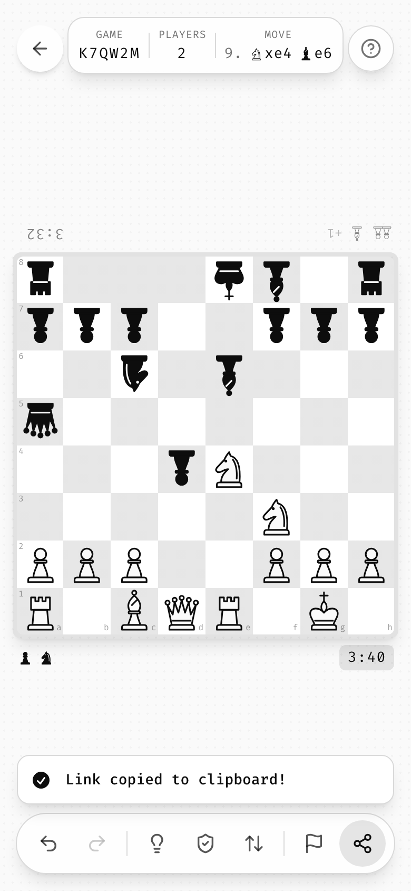
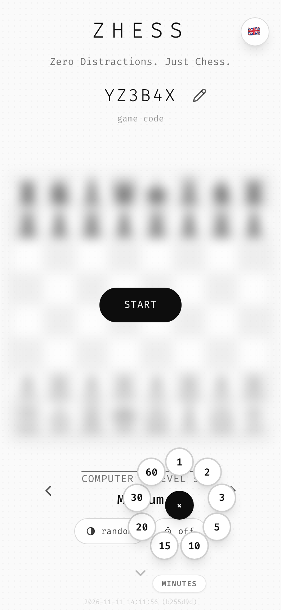
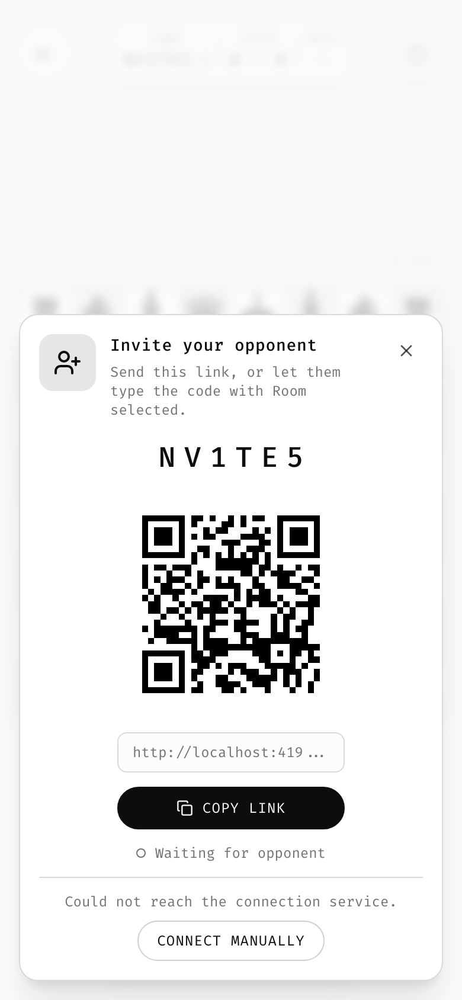
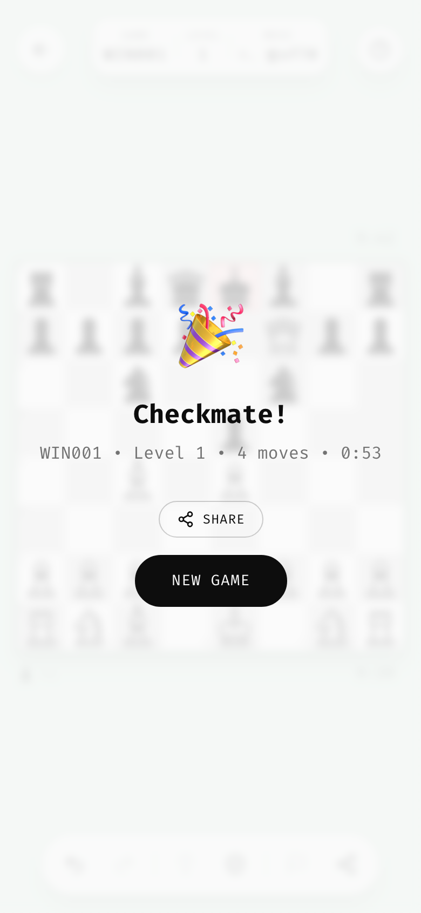
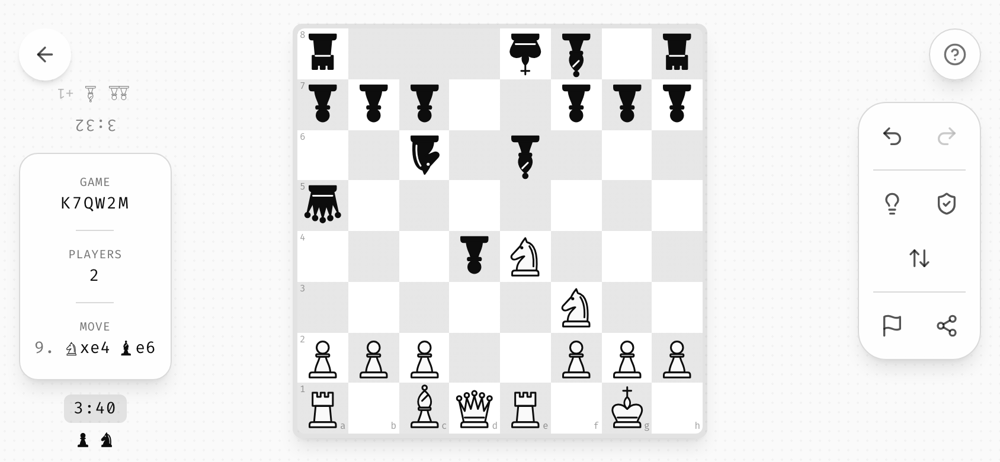
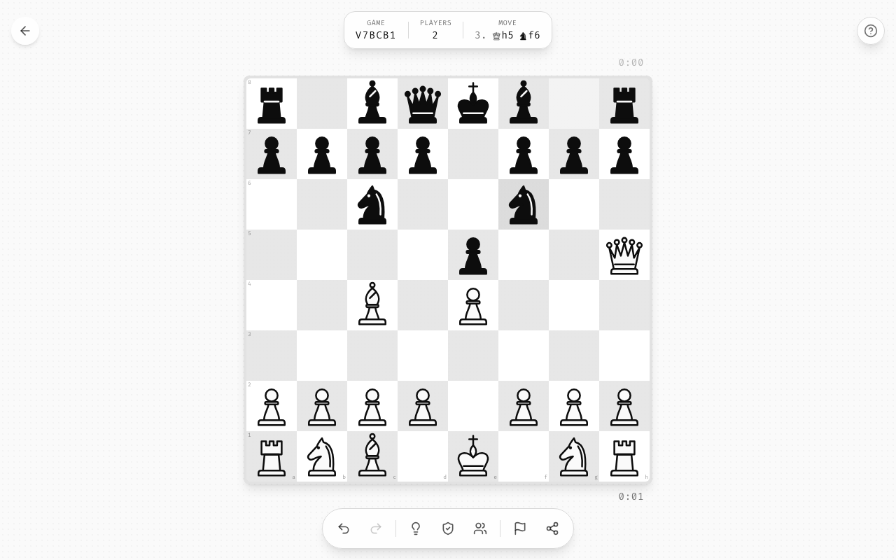
How to read this guide
Each chapter follows the same five beats. Skim the rules, or read the whole chapter when you need the detail.
One sentence you can remember. If you only read these, you'll get 80% right.
The reasoning, so you can decide cases the guide doesn't cover.
A live demo built from the actual tokens. Click, hold, drag.
Exact values to copy, then the common mistakes.
01The ten rules
The whole guide in ten lines. Every later chapter expands one of these.
- The board is the hero.Always centered, never moves between screens. Menus fade in around it.
- Grayscale first.All UI is neutral gray. Color only means something: red = broken, green = done. White pieces stay white in both themes.
- Everything is monospace.One mono face. Hierarchy from size, weight, case and tracking.
- Pills and circles.Actions are round. Containers are rounded rectangles.
- Chrome floats.Translucent bars pinned to safe edges. Tap the background to hide them all.
- Motion explains.Fade + short slide from where it lives, ease-out, 150–500 ms.
- Touch is first-class.Long-press, drag-to-dial, swipe, each with a mouse/keyboard twin.
- Every game has a code.Deterministic content from a short code, or the game's name and room. The URL is the save game.
- Forgiving by default.Undo everything, autosave everything, undo toasts instead of "Are you sure?".
- Respect the player.No ads, no accounts. One gentle donation ask, once.
Foundations
Color, type, surfaces and icons: the materials everything else is made of.
02Color
Build everything from true grays. Use color only to say something: red means a rule is broken, green means something is done.
A gray UI disappears and lets the board be the only thing you look at. Because color is so rare, a red cell or a green page can't be missed and can't be misread.
Tokens, light and dark
All neutrals have hue 0, saturation 0. Light and dark are mirror images: primary is foreground. Tokens are HSL triplets, so any token takes an alpha: hsl(var(--foreground) / .1).
The alpha ladder
Most of the nuance comes from foreground at low alpha, not from more gray tokens. Use these steps and nothing in between. Flip the theme (top right) and watch them invert.
Shades that are identity
Inverting tokens is right for chrome and wrong for identity. White and black pieces, stones or a QR code keep their shade in both themes: fill with --ink-light / --ink-dark, outline with foreground. A checkerboard keeps its light cells lighter by moving the foreground/10 step from the dark cells (light theme) to the light cells (dark theme): --checker-light / --checker-dark. Gray state fills use half the step, foreground/5, so a highlighted cell never looks like the other tone. Zhess learned all three after its first release.
Same markup in both panels. Top left is a light cell, white stones stay light, black stones stay dark; the ringed cell carries the half-step highlight.
Color that means something
The page-wide tint is the signature end-state: the whole background fades to success/12 (solved) or destructive/12 (full but wrong) over 1 s. See it live in Feedback.
- Use
foreground/5…/30for hover, selection and dividers - Pair every color with a second signal (ring, ✓, weight)
- Follow the system theme; ship both palettes
- Keep white pieces white in dark mode
- Introduce a "brand color" or colored primary buttons
- Use green for "go" or red for decoration
- Leave the browser's blue focus ring visible
03Typography
One monospace typeface for everything. Hierarchy comes from size, weight, case and tracking, never from a second font.
Mono gives the calm feel of graph paper or a terminal. Digits line up in grids and timers for free, and uppercase-plus-tracking labels look engineered rather than loud.
The roles
Weight follows size, inversely
Big text is light, small text is regular. The one exception is fixed game data (givens), which is bold so it reads as "printed" next to the player's lighter "handwriting".
Casing
| Element | Case | How |
|---|---|---|
| Wordmark, board codes | UPPERCASE | typed / coerced in code |
| Buttons, labels, eyebrows | UPPERCASE | text-transform; strings stay "Title Case" for translators |
| Headings in dialogs | Sentence / Title | as written |
| Whisper text | lowercase | board code, maybe another time |
The typeface
font-family: "Fira Code", "JetBrains Mono", "SF Mono", ui-monospace, Menlo, Consolas, monospace;
font-variant-ligatures: none; /* "=" and "->" in copy must stay literal */
font-variant-numeric: tabular-nums;Bundle the font (woff2, weights 300–700) so the PWA looks the same offline and on every OS. Zudoku currently ships no font, so it only looks right on machines that have Fira Code installed. Its Tailwind font-mono class also points to a different stack than the body text. The Ztyle preset fixes both.
m:sstimes:0:42,1:04:09- Wide tracking for codes and stats:
IZZARD - Apply caps with CSS
- Mix a sans-serif in "for readability"
- Bold display text
- Type translated strings in ALL CAPS
04Surfaces & icons
The page is dotted paper. Things sit on it at three depths only: flat, floating glass and overlay. Actions are round; containers are rounded rectangles.
Few depths keep the scene readable at a glance. Translucent, blurred chrome tells you it sits over the game and will go away, unlike the game itself.
The halftone page
.halftone-bg { background-image: radial-gradient(circle, hsl(var(--foreground) / .03) 1px, transparent 1px);
background-size: 8px 8px; }It goes on the root of every game. Because it is built from --foreground, it inverts in dark mode by itself. You're looking at it right now.
Three depths
Scrims are blurred background (background/80 + blur), never black.
Radius scale
Lines
Thin lines are border-tinted; thick group dividers are foreground/30. Dividers inside pills are short (24px) and centered, never full-length. Inputs have no box, just a 2 px underline.
Icon vocabulary
Lucide, 2 px stroke, never filled. 20 px in chrome, 16 px beside text, 12 px in fine print. Same concept, same icon, in every game.
Space & time
Where things go, and how they arrive and leave.
05Layout: the stage
One stage, one board, dead center. "Screens" are just different chrome fading in and out around a board that never moves.
With no page transitions, there's nothing to get lost in. The start screen shows an honest, blurred preview of the exact puzzle you're about to play, and starting simply brings it into focus.
- Start screen: the board is a blurred preview (8 px, 60%). Header above, level below, one Start pill on top. Press START.
- In game: the board un-blurs in place (500 ms); chrome fades in from its edges. Tap empty space to hide all chrome.
- Zero distractions: just the board. Tap again to bring the chrome back, or press ← to return to the start.
Portrait vs. mobile landscape
Mobile landscape = width > height and the short side is under 768 px. In landscape, the top pill becomes a left rail and the bottom toolbar becomes a right rail. Switch the demo above to see it.
Safe areas
Every edge-pinned element uses max(design inset, env(safe-area-inset-*)) with viewport-fit=cover:
| Element | Inset |
|---|---|
| Top round buttons | max(1.5rem, safe-top) |
| Top pill / start header | max(1rem, safe-top) |
| Side rails & buttons | max(1rem, safe-left/right) |
| Bottom toolbar | max(1rem, safe-bottom) |
| Toasts, FAB | max(1.5rem, safe-bottom + .5rem) |
| Start footer | max(2rem, safe-bottom + 1rem) |
Board sizing
--cell-size: clamp(28px, min(8vw, 8vh), 52px); /* 9 columns → ≤ 72% of the short side */For other grids use min(Nvw, Nvh) with N ≈ 72 / columns. The board never scrolls, from 320 × 568 to 4K.
When chrome sits above and below the board, add a height bound and measure the reserve. Zhess's info pill, player strips and toolbar take about 13rem, so its 8×8 board uses clamp(34px, min(11.5vw, 10vh, calc((100dvh - 14rem) / 8)), 96px): 636 px on a 1512 × 860 laptop, where a guessed 20rem gave 540 px.
Two players, one device
The board never rotates between turns. On touch devices the far player's pieces, strip and clock are drawn upside down (face to face); with a mouse everything stays upright (side by side). A toolbar button switches, and the choice is remembered. Per-player information lives in strips along each player's board edge; when the chrome hides, a running clock stays.
Layers
- Overlay everything with
position: fixed - Design portrait and landscape
- Portal pop-ups out of filtered/transformed parents
- Keep toasts above the toolbar in game
- Navigate to a separate "game page"
- Push the board around with headers or banners
- Detect "mobile" by width alone; use
pointer: coarse
06Motion
Short, ease-out, spatial. Things fade while sliding a few pixels toward the edge they belong to. Only "attention needed" states loop.
Motion tells you where something went, so you know where to find it again. Anything longer or bouncier would be decoration, and decoration is a distraction.
Durations
Entrances
Loops that stay in step
When many cells pulse at once, they must pulse in phase, or the board shimmers. Zudoku gives every error a huge negative delay, so all instances share one timeline, whenever they appeared:
.cell--error { animation: error-pulse 2s ease-in-out infinite; animation-delay: -10000s; }animation-delay: -10000s (in phase)Direct manipulation
While a finger drives something (swipe, dial), it follows with no transition. On release it animates to rest in 200 ms. Deleted list items slide out, then collapse their height, so the list closes the gap smoothly.
- Hide with
opacity-0 + translate toward edge + pointer-events-none - Stagger group entrances by 100 ms
- Honor
prefers-reduced-motion
- Springs, overshoot, wiggle
- Confetti or particle celebrations
- Animate the board's blur outside the screen transition
Behavior
How the player acts, and how the game answers.
07Interaction
Design for the thumb first, with gestures where they beat buttons. Every gesture has a mouse and keyboard twin.
A keypad covering half the screen is a distraction too. Gestures keep the board visible, and twins keep the game fully playable at a desk.
The radial dial
The signature input. Hold a cell, drag toward a value, release. How far you drag decides what kind of action happens.
The two-distance idea (aim = soft action, push through = hard action) works in any game where a target has a primary and a secondary action.
The long-press ladder
Long-press is the izzardry "secondary action". The longer the hold, the more deliberate the action:
| Hold | Action | Release |
|---|---|---|
300 ms | Radial dial on a cell | commits the choice |
500 ms | Options popover (e.g. "search for a hard code") | short press = normal action |
1000 ms | Peek at the full solution | hides it again |
3000 ms | Easter egg |
A long press must swallow the click that follows it, cancel on leave/cancel, and be announced in the aria-label: "Get hint (hold for full reveal)".
More gestures
| Gesture | Spec | Twin |
|---|---|---|
| Tap background | Toggles all in-game chrome | Click background |
| Swipe left on a list card | Direction lock after 8 px; delete past 40% width | Hover reveals × |
| Press | active:scale-95 on everything pressable | |
| Keys | Read e.code (Digit3), not e.key, so Shift+3 works on every layout |
08Feedback & states
Be forgiving and quiet. Undo everything, never ask "are you sure?", and show results by tinting the world rather than with fanfare.
Confirmation dialogs and loud celebrations interrupt flow. An immediate action plus an undo is both faster and safer.
Cell states
The most state-dense element. The same recipe works for tiles, cards and slots in other games.
End of game: tint the world
The background fades over 1 s. A wrong board gets no modal: the tint is the message. A correct one then shows the celebration overlay: 🎉, title, one summary line, Share + New Puzzle.
Against an opponent
- Tint from the point of view of the player holding the device:
success/12for a win,destructive/12for a loss, none for a draw or when one device belongs to both players. - Guard, don't ask. A move that is likely a mistake bounces back once with a red pulse; playing it again confirms. No dialog, no text.
- Requests from the other player (takeback, draw, rematch) arrive as an undo-style toast with Decline and Accept. The asker gets no toast; the button that asked pulses until the answer.
- Presence messages share one toast slot; a failure is stated once per cause, with the one action that helps.
Undo, not "Are you sure?"
Deletion is immediate; the toast lives 5 s and every new deletion restarts the timer for the whole stack. From two pending, an Undo All pill appears.
Long work
- The spinner replaces the icon that started the work, in place. There is no separate spinner area.
- A tooltip shows real numbers (
Tried: 312 seeds), and tapping the spinner cancels and restores. - Heavy work runs in Web Workers. The UI never freezes.
- A large download the player didn't ask for gets a quiet status line on the start screen, not a spinner (see the Zhess options in Components).
Helpers: one switch
All "helpful but spoiler-ish" assistance (conflict highlighting, disabling impossible values, auto-hiding dead notes) sits behind one toggle ( / ), on by default. Purists switch it off; nobody configures five settings.
09Components
Three button kinds, one toolbar, one stats pill. Reuse the recipes; don't invent new shapes.
Did you enjoy your first round?
If you'd like to support me as an independent developer building apps without distractions (or ads), you might want to…
☕ Buy me a coffeeWords & systems
The voice, the data model, the platform, and the relationship with the player.
10Voice & i18n
Calm, brief, friendly, a little personal. Use the fewest words that work, and exclamation marks only for success.
| ✓ Say | × Not |
|---|---|
| Progress saves automatically | Don't worry! Your progress is safely stored in your browser's local storage. |
| Same code = same puzzle | Puzzles are generated deterministically from the seed. |
| Sudoku Complete! | AMAZING!!! You're a genius! 🔥🔥🔥 |
| M00NLT removed · Undo | Are you sure? This cannot be undone. |
| maybe another time | No thanks, I don't like supporting indie devs |
Patterns
| Pattern | Example |
|---|---|
| Summary line | Board: IZZARD • Level 5 • 0:09 |
| Compact level / limit | Lv.10 Expert · Level 5 / 10 |
| Hidden gesture in aria | Get hint (hold for full reveal) |
| Tutorial pair | Exit Game / Progress saves automatically |
| Tagline formula | Zero Distractions. Just <Game>. (never translated) |
The difficulty ladder
Twelve single-word levels, default 5. Reuse them in every game that has difficulty.
| # | EN | DE | FR | ES |
|---|
Languages
EN, DE (du), FR (vous), ES (tú) are the baseline. Use a tiny in-house t(key, params) where English is the source and the type, and translate aria-labels too. The initial language comes from the stored choice, then navigator.language, then English. Brand strings (wordmark, tagline) are never translated.
When the table grows, split it per screen and let the type system keep all four languages complete, as Zhess does. Machine formats stay English (PGN, typed moves); dates and relative times go through Intl. Multiplayer words, settled by Zhess: Room · Raum · Salon · Sala, Opponent · Gegner · Adversaire · Rival.
11Codes, URL & platform
Every puzzle comes from a short uppercase code. The URL holds the whole game, and the app is an installable, offline PWA on static hosting.
Same code means the same puzzle for everyone, forever, which makes sharing, replaying and comparing trivial. If the URL is the save, a reload or a link never loses anything, and no server or account is needed.
Anatomy of a game URL
Board codes
| Alphabet | 0–9 A–Z, uppercase |
| Length | 6 generated · 1–8 typed (names welcome) |
| Identity | code + level = one game |
| Generation | seeded PRNG only (never Math.random() inside) |
| User-facing name | "board code" (never "seed"), or "game code" |
| No generated content | The code names the game; for two devices it is the room (Zhess) |
| Shared URL letters | s, d, p only; every other letter belongs to the game |
Saving
- Autosave on every move; keep the last 100 games.
- Resuming only bumps "last played" after a change or 15 s, so just peeking doesn't reorder history.
- Storage keys:
<game>:<key>(e.g.zudoku:helpers), every read intry/catch.
Platform
| Concern | Standard |
|---|---|
| Hosting | GitHub Pages via Actions · base: "./" · HashRouter |
| PWA | vite-plugin-pwa, autoUpdate, HTML network-first (3 s, precache directoryIndex: null), orientation: any, relative manifest icon paths |
| Large assets | Not precached · downloaded by the page with a status line · CacheFirst runtime cache · re-checked every launch (Zhess's 1.8 MB engine) |
| Updates | Hourly check · toast "A new version is available" + Reload · never an automatic reload mid-game |
| Version stamp | 2026-02-15 16:15:09 (717c4d3) bottom-right, start screen only; tap = copy + check update |
| Install | Bottom sheet once · then a small "Install App" pill |
| Icons | Real PNGs: 192, 512, 512 maskable · grayscale |
| Social image | 1200 × 630 · og:image as an absolute URL, plus og:url |
| Two devices | Rooms with no server: WebRTC, a public broker, STUN only, link/QR fallback (docs/18) |
Icon & social image: where we're heading
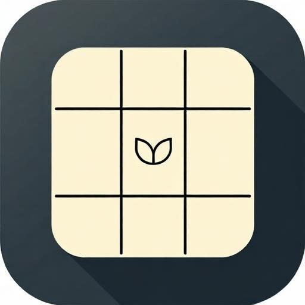
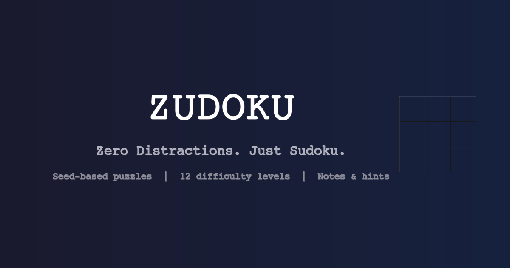
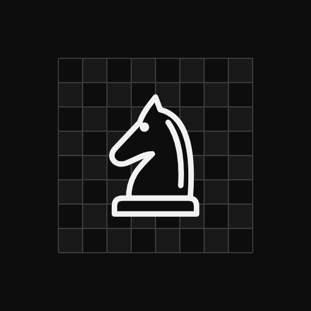
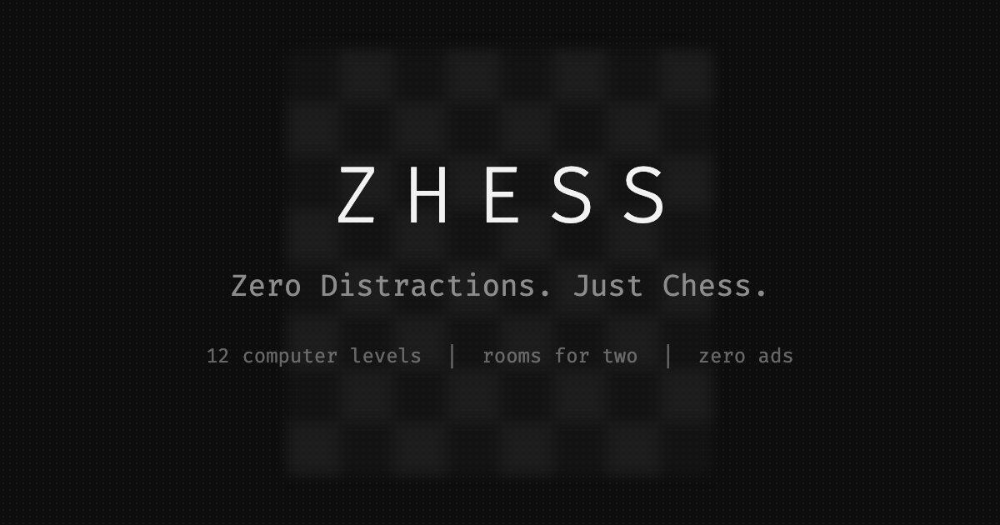
Target: grayscale. Use #0d0d0d or #fafafa, the board motif in thin strokes, the brand mono wordmark at weight 300 with 0.3em tracking, and the halftone texture. Every izzardry icon shares one frame and stroke weight and differs only in motif. Ideally the OG image shows the blurred board, the most recognizable izzardry picture. Zhess draws both images with a script from its own glyphs, so they never drift from the game.
12Respect: money & onboarding
Free, ad-free, account-free. Ask for support once, gently, after the player has had a good time. Teach once, in place, and get out of the way.
The donation ask
- "maybe another time" as a lowercase whisper link
- Keep a support button at the end of the scroll area
- Hide one small easter egg (Zudoku and Zhess: hold help for 3 s)
- Draw the coffee button yourself; no CDN image
- Ads, paywalls, "remove ads" upsells, tracking
- Ask on launch, ask repeatedly, guilt-trip
- Show it during a game
Onboarding: one overlay of coach marks
- Appears automatically the first time a game starts, and again on .
- Bubbles sit next to the thing they explain, over the live game (soft scrim, 2 px blur).
- They enter staggered by 100 ms; tap anywhere to dismiss.
- Illustrations are built from real UI pieces (a mini dial, a mini note cell), not images.
- The overlay is device-aware: touch devices get the gesture, pointer devices get the keys.
- About 6 bubbles, about 8 words per line, each with its real icon.
Accessibility essentials
- Every icon button has a translated
aria-label, including hidden gestures. - Brand focus ring (
2px solid ring), never the blue default. - State is never color-only: conflict = red and ring and pulse; solved = green and ✓.
prefers-reduced-motiondrops slides, blurs and loops, but a one-shot mark (the hint) stays visible, still.- Touch targets are at least 44 px on coarse pointers.
- Every long press has a keyboard twin (hold
Space, orShift+Enter). - A board is a
gridof labelled cells; turn-based games announce each move in words.
Use it
Drop the tokens into a new game, check it against the list, and see how the two reference apps measure up.
13Get started
| File | Use it when |
|---|---|
tokens/ztyle.css | Any web project. Plain CSS: variables, base, components. This page uses only this file. |
tokens/tailwind.preset.ts | Tailwind 3 (the reference stack), together with ztyle.css. |
tokens/ztyle.tokens.json | Native, game engines, design tools. |
docs/ | The full written reference, one chapter per topic. |
// tailwind.config.ts
import ztyle from "./ztyle/tokens/tailwind.preset";
export default { presets: [ztyle], content: ["./index.html", "./src/**/*.{ts,tsx}"] };
/* src/index.css */
@import "./ztyle/tokens/ztyle.css";
@tailwind base; @tailwind components; @tailwind utilities;
<!-- index.html -->
<body class="halftone-bg">Reference stack: React 18 + TypeScript (strict), Vite (SWC), Tailwind 3 + tailwindcss-animate, shadcn/Radix (only what you use), lucide, sonner, vite-plugin-pwa, Vitest, Playwright against the production build, GitHub Pages. Zhess was built on it unchanged. Keep the engine pure (lib/<game>.ts), heavy work in workers, and the component names shared across games.
Zhess copies ztyle.css and tailwind.preset.ts into src/ztyle/ verbatim, with a header naming the Ztyle revision, and keeps its own tokens in src/index.css under a --zhess- prefix. Never edit the copy: change Ztyle, then copy again.
14Launch checklist
Go/no-go for a new izzardry game. Ticks are remembered in this browser only.
15Zudoku audit
Where the reference game (717c4d3) departs from this guide. Full list: docs/90.
| # | Issue | Fix |
|---|---|---|
| 1 | No font shipped; only looks right with Fira Code installed | Bundle woff2 |
| 2 | font-mono ≠ body stack: two mono faces | Ztyle preset |
| 3 | Dark tokens exist but never activate | Follow system |
| 4 | theme-color #fafafa vs manifest #0a0a0a | Per-scheme metas, #0d0d0d |
| 5 | Icon & OG image off-palette; "PNGs" are JPEGs | Regenerate grayscale, real PNGs |
| 6 | Blue default focus outline on cells | Brand focus ring |
| 7 | Cell fills for related/selected/conflict never render (bg-card utility beats the component layer) | Layer fills over the card |
| 8 | Donation dialog: black scrim, square sheet on mobile | Blurred scrim, rounded card |
| 9 | Install prompt uses rounded-xl buttons | Pills |
| 10 | Undo-toast × does nothing | Dismiss / commit |
| 11 | Mixed storage keys (seedoku_games, …) | zudoku:<key> + migration |
| 12 | Some English strings bypass i18n; <html lang> fixed | Move to table; set lang |
| 13 | No reduced-motion, no arrow keys, 36 px targets | See accessibility |
16Zhess audit
Zhess (a6458ff) was built on Ztyle d29758b from its first commit and applies the guide as written, including every Zudoku fix above. These are the contradictions it exposed and how the guide resolved them. Full record: docs/91.
| # | Found in Zhess | Now in the guide |
|---|---|---|
| 1 | Mirror tokens turned white pieces black in dark mode | Theme-stable inks --ink-light / --ink-dark |
| 2 | Dark theme made a1 a light square | --checker-light / --checker-dark |
| 3 | A /10 highlight matched the other square tone | Gray state fills at half the step, /5 |
| 4 | The hint glow was cut off by neighbours and overflow-hidden | Glow above neighbours; corner cells carry the rounding |
| 5 | Reduced motion made the hint pulse invisible | Still mark for 2× the pulse |
| 6 | A guessed chrome reserve shrank the desktop board | One clamped --cell-size, measured reserve |
| 7 | Toasts covered the toolbar | In game, toasts sit above the toolbar |
| 8 | The workbox snippet served HTML cache-first | directoryIndex: null + precacheFallback |
| 9 | Root-relative manifest icons and a relative og:image broke on Pages | Relative icons, absolute social image |
| 10 | Long presses had no keyboard path | Hold Space; Shift+Enter |
| 11 | A pass-and-play toolbar needs 7 buttons | Aim for 6, hard limit 7 at 44 px; slots per mode |
| 12 | Chess generates no content, yet needs a code | The code names the game and the room |
Zhess also contributed patterns with no Zudoku counterpart: the opponent stepper and option pills, the status line for a background download, board-edge strips, face-to-face seating, guard-don't-ask, request and presence toasts, and rooms for two devices without a server.
17Open decisions
Calls the owner still needs to make. Until then, the guide uses the default marked ★. Zhess shipped every ★ default, so each is proven in a live game.
★ Self-host Fira Code (what Zudoku looks like on the creator's machine), or pick JetBrains Mono. Zhess bundles Fira Code.
★ Grayscale family, as Zhess's icon shows. Is the sprout glyph an izzardry mark to keep in every icon?
★ Follow the system, as Zhess does. Optionally add a manual toggle on the start screen only.
★ Swap the first letter for Z (Zudoku, Zhess, Ztyle…) as the default naming pattern.
★ Time of day or MMM d (Zudoku), until the catalogue picks one. Zhess shows relative times.